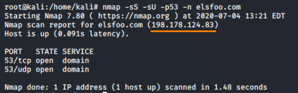

DNS Scans
Use DNS of the internal Network
We can use Nmap to enumerate all the DNS servers that exist within the remote/target network.
Sometimes DNS only accepts communication from port 53. This means that all communications with a port different than 53 are blocked by the service or the firewall
A DNS server runs on:
• TCP port 53
nmap -sS --source-port 53 -p53 -n <netblock> #TCP scan
• UDP port 53
nmap -sU --source-port 53 -p53 -n <netblock> #UDP scan
• both TCP and UDP port 53
nmap -sS -sU --source-port 53 -p53 -n <netblock>
example

Once we have found on which IP addresses that run a DNS server we can focus on these address(es) in order to discover more informations about the network.
Now we can use the DNS enumeration techniques seen in the DNS enumeration chapter
--dns-servers
By default, Nmap determines your DNS servers (for rDNS resolution) from your resolv.conf file (Unix) or the Registry (Win32). Alternatively, you may use this option to specify alternate servers.
If we find DNS name server into the network we could use them to try reverse DNS (determine the domain name associated with an IP address).
nmap -sS -sV --dns-servers [IpDNS] [addressRange]
While WHOIS can be used to identify public netblocks owned by a target organization.
• DNS Reverse Scan:
Once a public netblock is identified, we can use reverse DNS scans to resolve the PTR records for each IP address.
How
1) Perform a WHOIS lookup for IP addresses owned by the target organization
2) perform a reverse DNS lookup for every IP
root@kali:/# dnsrecon.py --domain <domain> --range <netblock>
root@kali:/# nmap -sL <netblock> | grep \) # the grep command searches for a literal ")" character
root@kali:/# msfconsole
msf> use auxiliary/gather/enum_dns
msf> set DOMAIN <domain>
msf> set ENUM_RVL true
msf> set IPRANGE <netblock>
msf> run
msf> use auxiliary/gather/enum_dns
msf> set DOMAIN <domain>
msf> set ENUM_RVL true
msf> set IPRANGE <netblock>
msf> run
• “Brute Force” scans
While each PTR record points to one name (only), multiple CNAMEs (canonical names, aka DNS aliases) can point to one IP address.
With “Brute Force” scan we can discover these multiple CNAMEs
Although commonly called “brute force” scans, these DNS scans are actually dictionary attacks:
1- Supply a dictionary of potential DNS names
2- Read each entry
3- Attempt to resolve $entry.example.com
◇ Nmap
▪ default list is at /usr/share/nmap/nselib/data/vhosts-default.lst with 127 entries

root@kali:/# nmap --script=dns-brute <domain>

▪ custom list
root@kali:/# nmap --script=dns-brute example.net --script-args=dns-brute.hostlist=/usr/share/dnsrecon/namelist.txt
◇ Dnsrecon
dnsrecon has some useful dictionaries, on Kali:
▪ /usr/share/dnsrecon/namelist.txt → 1,907 entries
▪ /usr/share/dnsrecon/subdomains-top1mil-20000.txt → 5,000 entries
▪ /usr/share/dnsrecon/subdomains-top1mil-5000.txt → 20,000 entries
root@kali:/# dnsrecon -t brt -d <domain> --name_server <nameServer> -D /usr/share/dnsrecon/namelist.txt